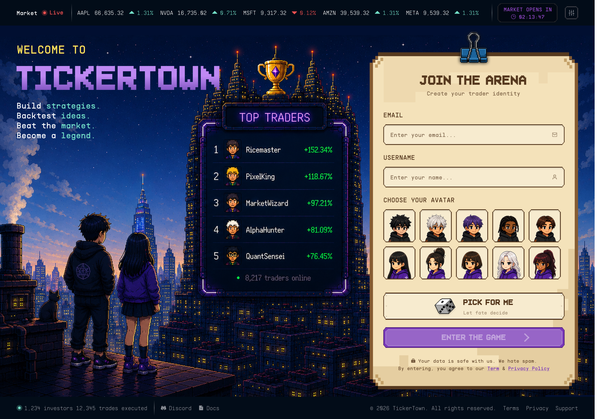
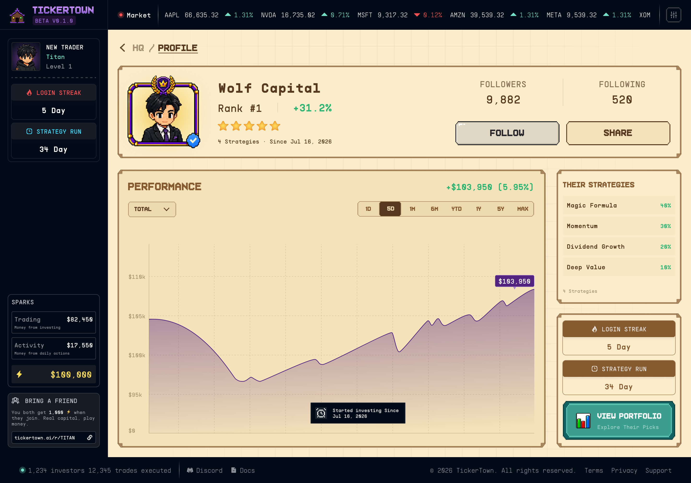
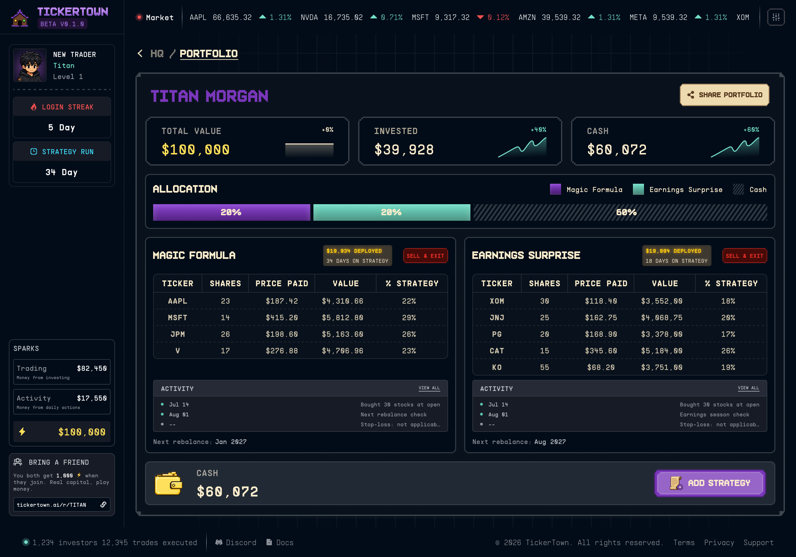
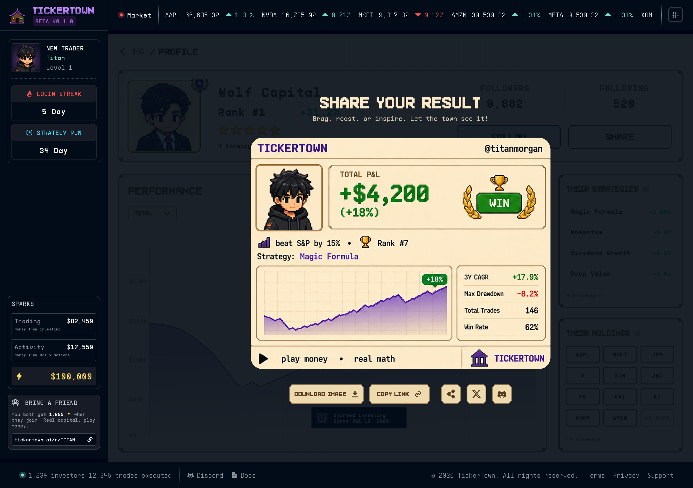
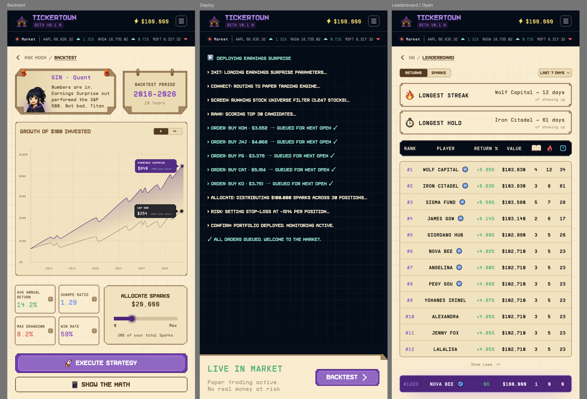

Everyone says they're making money investing. Nobody shows the receipts.
1 September 2026

I stopped vibe investing. Then I realized the hardest part wasn't just learning to build the system. It was finding anyone willing to share theirs.
Once, I bought Beyond Meat after listening to a podcast.1 🤦♂️
That’s vibe investing. You hear something compelling, you get excited, you buy. No rules. No system. Just feelings and your brokerage app.
I did this for a while. I may have even picked the right stocks sometimes. But I almost always failed to exit at the right time. Whether I was winning or losing, I gave in to fear and greed. Up 20%? Hold, because maybe it goes higher. Down 20%? Hold, because maybe it comes back. It rarely played out the way I hoped.
So I tried to put a simple rule on myself: 20% up, I’m out. 20% down, I’m out too.2
It helped. But it was still manual. I had to watch, decide, and act each time. It made trading emotional and somewhat arbitrary (“systemless”). It was also troublesome, annoying, and took too much time and attention. It should be done programmatically.
As I dove deeper, it started to raise harder questions. How much should I put into each position? How do I size the bet? What type of investor am I, or should I be?
That’s when I fell down the rabbit hole of reading more about systematic investing. Magic formula. Turtle trading system. Bogleheads. The “awesome portfolio.”3 Benjamin Graham, Warren Buffett, Charlie Munger, and more. Each system had a different logic, a different risk profile, and different assumptions.
But the more I studied them, the more I realised that every investing system is really just a set of opinions. It’s shaped by a person’s psyche and their comfort with drawdowns, then refined through data and individual lived experience.
I found that’s a useful framework to think about investing. But it’s a hard mindset to acquire on your own because there’s no safe playground4 to practice and nobody shares the full picture of their system.5
Whether it’s friends, family, or people of Reddit, everybody claims they’re making money and only shares their winning strategies. Maybe some of them are. But I think a lot of it smells like bullshit (sorry). Somebody has to be losing. When people lose money, they don’t say. You’ll hear “I’m up 30% this year” over dinner, but you’ll never see the month they were down 15% and panic-sold.
Humans share winnings. Not losses. That’s just how it is, it seems.
What we’re building
One of the features I’m most excited to ship for TickerTown is the ability to see everybody’s portfolio performance and the actual stocks they pick based on the system they follow or built.6
Not opinions. Not vibes. Real receipts.

A community repository of strategies, tested against real market data, where you can see who’s been right and who hasn’t. Who’s the talker and who’s the doer. You learn from the community when they’re right, and also when they’re wrong.
I want this for selfish reasons. I want to learn from people who are better at this than me. But it’s also the kind of product I wish existed when I was learning to invest.
A transparent community where people share openly, by default, would be a great place to learn systematic investing. No theatrics. Real receipts. That’s the TickerTown I want to build, and also the one I want to play.


Where we are
TickerTown got delayed. We spent more time than planned on the design. We realised we couldn’t just get the desktop web right. We had to get the mobile web right too. That took time, working through it on Figma with our freelance designer, screen by screen.7

We have more than 150 people on the waitlist. Bryan from Leadin.sg helped a lot (tyvm). He tested several messaging approaches with us and brought more people in. That kind of hands-on help from someone outside the team, who is enthusiastic about the product, is something I don’t take for granted.8
We’re targeting end of September to ship.
If you want to learn systematic investing using play money, or if you’re just curious about how other people are actually performing, drop your email on the waitlist.
See you in TickerTown!
1 The interview was with Ethan Brown, founder of Beyond Meat, on the Masters of Scale podcast. In hindsight, stupid vibe investing on my part. Even more stupidly, I didn’t cut losses early enough.
2 I’ve since pivoted out of this rule because it doesn’t suit me. I’m more of a value investor (when I select bets). And an income-driven + Boglehead (majority) now. Still learning. Not a guru.
3 I like the 20/20/20/20/20 system on cash, stocks, bonds, real estate, and gold by Jared Dillian. It’s simple and hassle free, optimized to give peace of mind.
4 Because you only learn when you lose money, it is hard to get enough repetition to build your own workable system without paying for every lesson. More here.
5 I spoke with smart people who have survived multiple crashes. Everyone has a different, personal approach built through experience.
6 v1 has some limitations: US stocks only, daily OHLCV data, with users able to set rebalancing and stop-loss rules
7 In just the last few months, there were over 250 comments on the Figma canvas alone. A lot of thought poured into the product through that.
8 Bryan brings results. Not just for TickerTown’s waitlist, but for his clients too. We spoke candidly about how he helps them, and I liked his transparency.